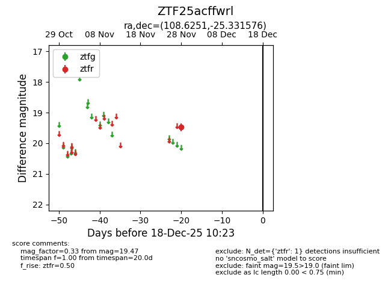
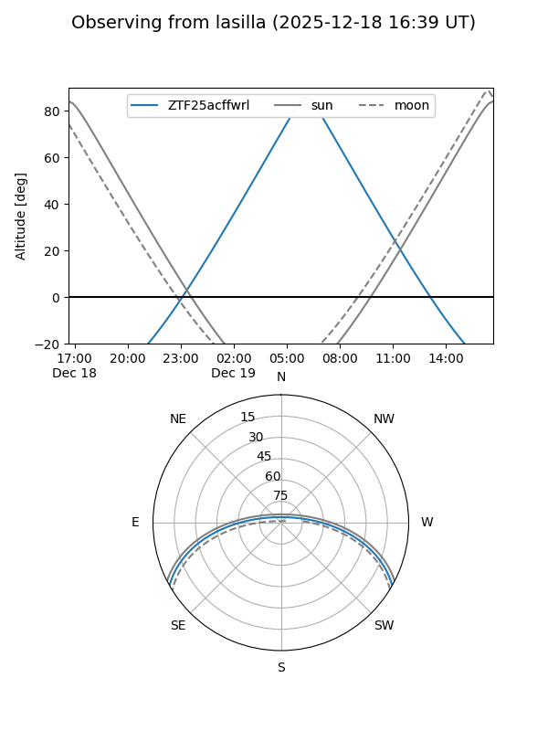
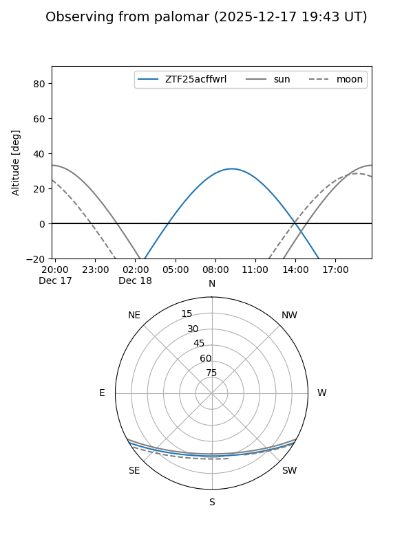

ZTF25acffwrl
Target ZTF25acffwrl at 2025-12-18 11:17
Aliases and brokers:
FINK: fink-portal.org/ZTF25acffwrl
Lasair: lasair-ztf.lsst.ac.uk/objects/ZTF25acffwrl
ALeRCE: alerce.online/object/ZTF25acffwrl
alt names
ZTF25acffwrl (ztf,fink_ztf)
Coordinates:
equatorial (ra, dec) = 108.6251,-25.33158
equatorial (HMS+DMS) = 07:14:30.02,-25:19:53.67
galactic (l, b) = (238.0810,-6.56239)
Photometry
last ztfr=19.47
1 ztfr detections
Lightcurve

Visibility


Additional plots